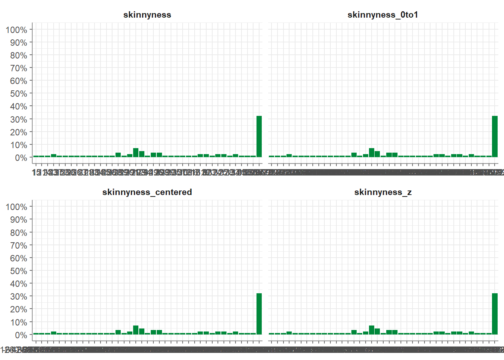
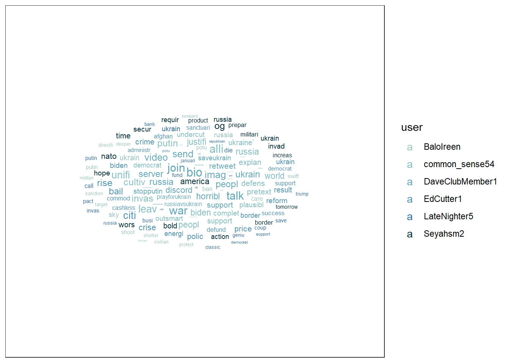
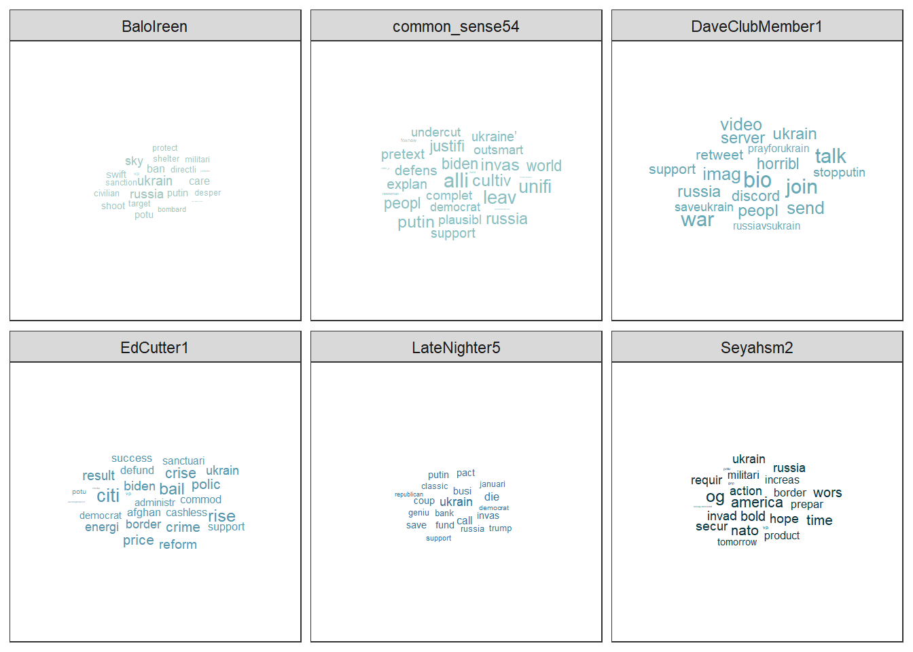
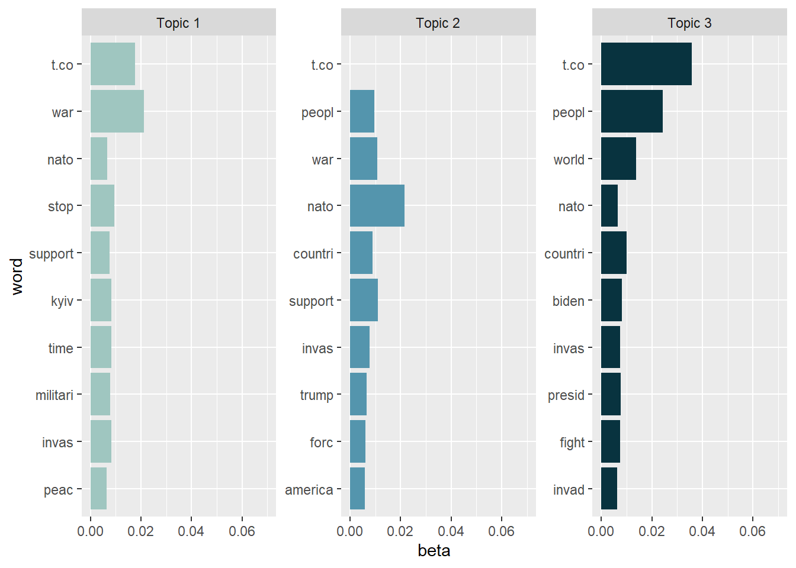
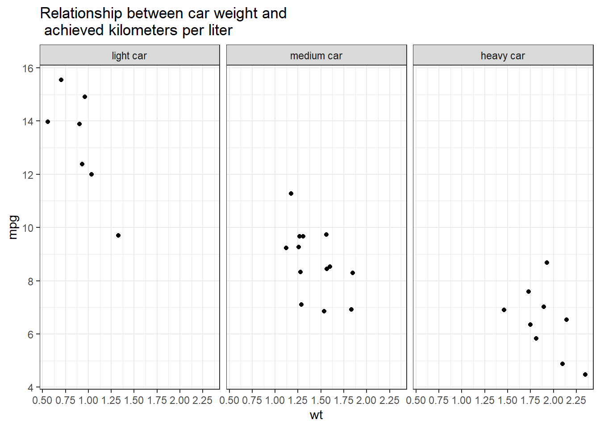

9 Tidy text analysis
After working through Tutorial 9, you’ll…
- understand the concept of tidy text
- know how to combine tidy text management approaches with regular expressions
- be able to produce first analyses, e.g., word frequencies
9.1 What is tidy text?
Since you’ve already learnt what tidy data is (see Tidy data), you can make an educated guess about the meaning of “tidy text”! In contrast to the ways text is commonly stored in existing text analysis approaches (e.g., as strings or document-term matrices), the tidy text format is a table with one single token per row (token = the unit of analysis). A token is a meaningful unit of text, i.e., a word, a sentence, or a paragraph that we are interested in using for further analysis. Splitting text into tokens is what we call the process of tokenization.
Julia Silge and David Robinson’s tidytext package makes tokenizing into the tidy text format simple! Moreover, the tidytext package builds upon tidyverse and ggplot2, which makes it easy to use for you, since you already know these packages (see [Tutorial: Data management with tidyverse] and Tutorial: Data visualization with ggplot for a recap). That’s why we’ll focus on the tidytext in this chapter.
This tutorial is based on Julia Silge and David Robinson’s open-access book “Text Mining in R. A Tidy Approach”. If you want to dig deeper into tidy text analysis, you should check the book out. Both authors have also created an informative flowchart of the tidy text analysis workflow:
| Image: Tidy Text Analysis Workflow |
 |
Before we start, install and load the tidytext package and activate the tidyverse package.
9.2 Preprocessing real-world data
Let’s explore what the tidytext package can do by applying it to real-world social media data. For this exercise, I’ve provided a dataset collected via the Twitter API that documents public reactions to the Russian aggression against Ukraine: ukraine_tweets.rds.
Your first step is to import the dataset into RStudio.
Unlike CSV files, .rds files are a native R format that stores objects exactly as they were saved. This brings several advantages—most importantly, it preserves data types such as date-time information without requiring additional parsing. That means the timestamps in our tweet data remain intact and ready for analysis.
Let’s inspect the data using the View() function.
This data set contains a lot of information! We get to know who wrote the tweet (user and the unique user.id) and where this person lives (user.location). But most importantly, we can find the text of the tweet in the column full_text.
First of all, let’s reduce some of these columns that we don’t need for our text analysis.
data_short <- data %>%
select(time, user, full_text) # keeps time, user, and full_text
View(data_short)Now, to get an overview, let’s create a visualization of the user’s who posted at least 18 tweets.
data_short %>%
count(user, name = "n") %>%
filter(n > 18) %>%
ggplot(aes(x = user, y = n)) +
geom_col() +
theme_bw() +
theme(axis.text.x = element_text(
angle = 90, vjust = 0, hjust = 0
)) +
labs(
title = "Users who posted the most tweets about the Russian\naggression against Ukraine",
x = "User name",
y = "Number of Tweets"
)
Now that we have had our overview, we will start with a process called text normalization. Text normalization is the endeavor to minimize the variability of a text by bringing it closer to a specified “standard” by reducing the quantity of divergent data that the computer has to deal with. In plain English, this means that our goal is to reduce the amount of text to a small set of words that are especially suitable to explain similarities and differences between tweets and, more interestingly, between the accounts that have published these tweets. Overall, text normalization boosts efficiency. Some techniques of text normalization will be covered in the next few sections, for example, tokenization, stop word removal, stemming/lemmatization and pruning. You could add additional steps, e.g. spelling corrections to reduce misspellings that increase word variance, but we won’t cover all text normalization steps in this tutorial.
9.2.1 Tokenization
I think we are ready to tokenize the data with the amazing
unnest_tokens() function of the tidytext package. Tokenization is the process of breaking text into words (and punctuation marks). Since scientists are almost never interested in the punctuation marks and will delete them from the data set later anyway, unnest_tokens() comes with the nice bonus of setting all text to lowercase and deleting the punctuation marks directly, leaving only words (and numbers) as tokens.
Another common practice is to remove all tokens that contain numbers. Depending on the research question, it can also be helpful to remove URLs. For illustrative purposes, we will do both. But keep in mind that removing all URLs will take the option from you to compare what accounts have shared certain URLs more frequently than others.
remove_reg <- "&|<|>" # & = & in HTML, < = < in HTML, > = > in HTML
data_tknzd <- data_short %>%
mutate(tweet = row_number()) %>% # ID pro Tweet
filter(!str_detect(full_text, "^RT")) %>% # Retweets entfernen
mutate(
text = full_text %>%
str_remove_all(remove_reg) # HTML-Entitäten
) %>%
unnest_tokens(
word,
text,
token = "words",
to_lower = TRUE,
strip_punct = TRUE
) %>%
filter(!str_detect(word, "^[:digit:]+$")) %>% # remove all words that are numbers, e.g. "2020"
filter(!str_detect(word, "^http")) %>% # remove all words that are a URL, e.g., (https://evoldyn.gitlab.io/evomics-2018/ref-sheets/R_strings.pdf)
filter(!str_detect(word, "^(\\+)+(.)+$")) %>% # remove all words that only consist of plus signs followed by any other characters (e.g., "+++eil+++")
filter(!str_detect(word, "^(\\-)+(.)+$")) %>% # remove all words that only consist of minus signs followed by any other characters (e.g., "---eil---")
filter(!str_detect(word, "^(.)+(\\+)+$")) # remove all words that start with some kind of word followed by plus signs (e.g., "news+++")Now, let’s check the total number of unique words in our tweet data:
paste("We are investigating ", dim(data_tknzd)[1], " non-unique features / words and ", length(unique(data_tknzd$word)), " unique features / words.")## [1] "We are investigating 259046 non-unique features / words and 25916 unique features / words."Remember: unnest_tokens() comes with a few handy preprocessing
features, i.e., it already turns the text into a standardized format for further analysis:
- Tweet ids from which each word originated are kept in the data frame (column: tweet).
- All punctuation has already been taken care of, i.e., dots, questions marks, etc. have been removed.
- All uppercase letters have been taken care of, i.e., words have been transformed to lowercase.4
Practice: Tokenization
Now it’s your turn. I’ve uploaded another data set that deals with the shitstorm about the German influencer Fynn Kliemann on Twitter. You can read more about the scandal that started on the 6th of May 2022here if you feel that you need more information.
Load the Kliemann data into RStudio. Use the tutorial code to set the encoding. After loading the Kliemann data keep only the time, user, and full_text column.
Next, try to tokenize the data.
For solutions see: Solutions for Exercise 9
9.2.2 Stop word removal
Next, we should get rid of stop words. Stop words are a group of words
that are regularly used in a language. In English, stop words such as
“the,” “is,” and “and” would qualify. Because stop words are so common, they don’t really tell us anything about the content of a tweet and what differentiates this tweet from other tweets. The tidytext package comes with a pre-installed stop word data set. Let’s save that data set to a source object called stop_word_data. This way, we can use it later.
stop_word_data <- tidytext::stop_words
head(stop_word_data, 20) # prints the first 20 stop words to the console## # A tibble: 20 × 2
## word lexicon
## <chr> <chr>
## 1 a SMART
## 2 a's SMART
## 3 able SMART
## 4 about SMART
## 5 above SMART
## 6 according SMART
## 7 accordingly SMART
## 8 across SMART
## 9 actually SMART
## 10 after SMART
## 11 afterwards SMART
## 12 again SMART
## 13 against SMART
## 14 ain't SMART
## 15 all SMART
## 16 allow SMART
## 17 allows SMART
## 18 almost SMART
## 19 alone SMART
## 20 along SMARTNow, let’s use these stop words to remove all tokens that are stop words from our tweet data.
data_tknzd <- data_tknzd %>%
filter(!word %in% stop_word_data$word) %>% # removes all of our tokens that are stop words
filter(!word %in% str_remove_all(stop_word_data$word, "'")) # first removes all ' from the stop words (e.g., ain't -> aint) and then removes all of our tokens that resemble these stop words without punctuationPractice: Stop word removal
Now it’s your turn. The Kliemann data is in German, so you can’t use the
tidytext stop word list, which is meant for English text only. So
install and load the ‘stopwords’ package that allows you to create a
dataframe that contains German stop words by using this command:
stop_word_german <- data.frame(word = stopwords::stopwords("de"), stringsAsFactors = FALSE).
Create your German stop word list and use it to remove stop words from
your tokens.
For solutions see: Solutions for Exercise 9
9.2.3 Lemmatizing & stemming
Minimizing words to their basic form (lemmatizing) or root (stemming) is a typical strategy of reducing the number of words in a text.
Stemming: A stem is the root form of a word without any suffixes. A stemming algorithm (= stemmer) removes the suffixes and returns the stem of the word. Example1: vengeance –> vengeanc, or, if you use a very aggressive stemmer, vengeance –> veng || Example2: legions –> legion, or, if you use a very aggressive stemmer, legions –> leg (this one is problematic!) || Example3: murdered –> murder
Lemmatization: A lemma is a lexicon headword or, i.e., the dictionary-matched basic form of a word (as opposed to a stem created by eliminating or changing suffixes). Because a lemmatizing algorithm (= lemmatizer) performs dictionary matching, lemmatization is more computationally demanding than stemming. vengeance –> vengeance || Example2: legions –> legion || Example3: murdered –> murdered (this one is problematic!)
Most of the time, stemmers will make a lot of mistakes (e.g., legions –> leg) and lemmatizers will make fewer mistakes. However, lemmatizers summarize fewer words (murdered –> murdered) and therefore reduce the word count less efficiently than stemmers. Which technique of text normalization is preferred is always determined by the research question and the available data.
For the ease of teaching, we will use stemming on our tweet data. However, you could also use lemmatization with the spacyr package.
We’ll use Porter’s (1980) stemming algorthm, which is the most
extensively used stemmer for the English language. Porter made the
stemmer open-source, and you may use it with R using the SnowballC
package (Bouchet-Valat 2020).
# installing/loading SnowballC:
if(!require(SnowballC)) {
install.packages("SnowballC");
require(SnowballC)
} #load / install+load SnowballC
data_tknzd <- data_tknzd %>%
mutate(word = wordStem(word))
head(data_tknzd)## # A tibble: 6 × 5
## time user full_text tweet word
## <dttm> <chr> <chr> <int> <chr>
## 1 2022-02-25 18:10:59 peekay14 @vonderleyen @EU_Commission rubbish!… 1 vond…
## 2 2022-02-25 18:10:59 peekay14 @vonderleyen @EU_Commission rubbish!… 1 eu_c…
## 3 2022-02-25 18:10:59 peekay14 @vonderleyen @EU_Commission rubbish!… 1 rubb…
## 4 2022-02-25 18:10:59 peekay14 @vonderleyen @EU_Commission rubbish!… 1 word
## 5 2022-02-25 18:10:59 peekay14 @vonderleyen @EU_Commission rubbish!… 1 fell…
## 6 2022-02-25 18:10:59 peekay14 @vonderleyen @EU_Commission rubbish!… 1 euLet’s check how many unique words we have in our tweet data after all of our preprocessing efforts:
paste("We are investigating ", dim(data_tknzd)[1], " non-unique features / words and ", length(unique(data_tknzd$word)), " unique features / words.")## [1] "We are investigating 129252 non-unique features / words and 21182 unique features / words."Practice: Lemmatizing & stemming
Please stem the Kliemann data with the PorterStemmer. Since we are
working with German data, you’ll have to add the option
language = "german" to the wordStem() function.
For solutions see: Solutions for Exercise 9
9.2.4 Pruning
Finally, words that appear in practically every tweet (i.e., promiscuous
words) or words that that appear only once or twice in the entire data
set (i.e., rare words) are not very helpful for investigating the
“typical” word use of certain Twitter accounts. Since these words do not
contribute to capturing similarities and differences in texts, it is a
good idea to remove them. This process of (relative) pruning is
quickly achieved with the quanteda package. Since I don’t want to
teach you how to use quanteda just yet, I have developed a useful
short cut function that enables you to use relative pruning without
having to learn quanteda functions.
First, install/load the quanteda package and initialize my
prune-function by running this code:
# Install / load the quanteda package
if(!require(quanteda)) {
install.packages("quanteda");
require(quanteda)
} #load / install+load quanteda
prune <- function(data, tweet_column, word_column, text_column, user_column, minDocFreq, maxDocFreq) {
suppressWarnings(suppressMessages(library("quanteda", quietly = T)))
# Grab the variable names for later use
tweet_name <- substitute(tweet_column)
word_name <- substitute(word_column)
tweet_name_chr <- as.character(substitute(tweet_column))
word_name_chr <- as.character(substitute(word_column))
# turn the tidy data frame into a document-feature matrix:
dfm <- data %>%
dplyr::select({{tweet_column}}, {{text_column}}, {{word_column}}, {{user_column}}) %>%
dplyr::count({{tweet_column}}, {{word_column}}, sort = TRUE) %>%
tidytext::cast_dfm({{tweet_column}}, {{word_column}}, n)
# perform relative pruning:
dfm <- quanteda::dfm_trim(dfm,
min_docfreq = minDocFreq, # remove all words that occur in less than minDocFreq% of all tweets
max_docfreq = maxDocFreq, # remove all words that occur in more than maxDocFreq% of all tweets
docfreq_type = "prop", # use probabilities
verbose = FALSE) # don't tell us what you have achieved with relative pruning
# turn the document-feature-matrix back into a tidy data frame:
data2 <- tidy(dfm) %>%
dplyr::rename({{word_name}} := term) %>% # rename columns so that their names from data_tknzd and data_tknzd2 match
dplyr::rename({{tweet_name}} := document) %>%
dplyr::select(-count) %>% # remove the count column
dplyr::mutate({{tweet_name}} := as.integer({{tweet_name}}))
# delete the words that quanteda suggested from the original data
data <- dplyr::right_join(data, data2, by = c(word_name_chr,tweet_name_chr)) %>% # keep only the shorter data set without frequent/rare words, but fill in all other columns like user and date
dplyr::distinct({{tweet_name}},{{word_name}}, .keep_all= TRUE) # remove duplicate rows that have been created during the merging process
return(data)
}Now that you have my prune() function running, you can use it to prune
your data. The prune function takes the following arguments:
- data: the name of your data set (here: data_tknzd),
- tweet_column: the name of the column that contains the tweet ids (here: tweet)
- word_column: the name of the column that contains the words/tokens (here: word), the name of the column that contains the full text of the tweets (here: text)
- text_column: the name of the column that contains the tweets’ full text (here: text)
- user_column: the name of the column that contains the user names (here: user)
- minDocFreq: the minimum values of a word’s occurrence in tweets, below which super rare words will be removed (e.g., occurs in less than 0.01% of all tweets, we choose here: 0.001)
- maxDocFreq: the maximum values of a word’s occurrence in tweets, above which super promiscuous words will be removed (e.g., occurs in more than 95% of all tweets, we choose here: 0.95)
# Install / load the quanteda package for topic modeling
data_tknzd <- prune(data_tknzd,tweet,word,full_text,user, 0.001, 0.95)Finally, now that we have removed very rare and very frequent words, let’s check the number of our unique words again:
paste("We are investigating ", dim(data_tknzd)[1], " non-unique features / words and ", length(unique(data_tknzd$word)), " unique features / words.")## [1] "We are investigating 90283 non-unique features / words and 1761 unique features / words."Great, we have finished the text normalization process! I think we are ready to take a sneak peek at our most common words! What are the 10 most commonly used words in our tweet data? I’m excited!
## # A tibble: 10 × 2
## word n
## <chr> <int>
## 1 ukrain 8873
## 2 t.co 4110
## 3 russia 2419
## 4 putin 1453
## 5 russian 1320
## 6 war 1137
## 7 peopl 1111
## 8 nato 1047
## 9 invas 706
## 10 countri 644Evaluation: Shortly after Russia’s invasion of Ukraine began, Twitter conversations centered on the countries Ukraine, Russia, Putin, the people, the war, NATO, and the invasion.
Practice: Pruning
Please, try the prune function for yourself. Prune the Kliemann data
and remove 1) words that occur in less than 0.03% of all tweets and 2)
words that occur in more than 95% of all tweets. Beware: Pruning is
a demanding task, therefore your machine might need a while to complete
the computations. Wait until the red stop sign in your console vanishes.
For solutions see: Solutions for Exercise 9
9.3 (Relative) word frequencies
Now that we have finished our text normalization process, let’s get to know our data. Let’s first look at the absolute word frequencies of the 5 most active Twitter accounts in our data set to get to know them better. For this, we need to group our data by the most active Twitter accounts and count how many times each user used each word.
Why is it intresting to know what words are used by what Twitter account? Word usage reveals a lot about the agenda and thought processes of communciators. Words have power, especially in times of conflict. Words, for example, might help define who is seen as the attacker and who is seen as the defender. It matters whether I call something an “attack” or a “war”, since an aggression is a unilateral act of invasion, while a war is a reciprocal relationship that has two parties involved.
## # A tibble: 18 × 2
## user n
## <chr> <int>
## 1 DaveClubMember1 570
## 2 common_sense54 556
## 3 EdCutter1 425
## 4 Seyahsm2 324
## 5 BaloIreen 193
## 6 AlinaPoltavets1 187
## 7 dhart2001 171
## 8 Alexandera000 169
## 9 tinfoilted1 166
## 10 LateNighter5 160
## 11 _Matheuu_ 144
## 12 NilAndNull 140
## 13 Vadim56691447 137
## 14 TicheyPamela 135
## 15 Julli_a_ 119
## 16 inversedotcom 116
## 17 Chris__Iverson 106
## 18 Intrepid_2011 106Evaluation: The five most active Twitter accounts are DaveClubMember1, common_sense54, EdCutter1, Seyahsm2, and BaloIreen. Let’s also add the less active LateNighter5 for the purpose of practice.
frequency <- data_tknzd %>%
filter(user == "DaveClubMember1" | user == "common_sense54" | user == "EdCutter1" | user == "Seyahsm2" | user == "BaloIreen" | user == "LateNighter5") %>% # remove all users that are not the most prominent users
count(user, word, sort = TRUE) # sorts the word, i.e., the most common words are displayed first
frequency## # A tibble: 139 × 3
## user word n
## <chr> <chr> <int>
## 1 DaveClubMember1 bio 30
## 2 DaveClubMember1 discord 30
## 3 DaveClubMember1 horribl 30
## 4 DaveClubMember1 imag 30
## 5 DaveClubMember1 join 30
## 6 DaveClubMember1 peopl 30
## 7 DaveClubMember1 prayforukrain 30
## 8 DaveClubMember1 retweet 30
## 9 DaveClubMember1 russia 30
## 10 DaveClubMember1 russiavsukrain 30
## # ℹ 129 more rowsEvaluation: When we inspect the frequency object closely in our R environment,
this is insightful. As we can see, the PorterStemmer
treats ukranian and ukrain, american and america, as well as
russian and russia as separate words. Since the part of speech
(adjective or noun) is not particularly relevant for our analyses, we
should merge the terms to focus on more meaningful TopWords.
data_tknzd$word <- str_replace_all(data_tknzd$word, c("russian" = "russia", "ukrainian" = "ukrain", "american" = "america"))
frequency <- data_tknzd %>%
filter(user == "DaveClubMember1" | user == "common_sense54" | user == "EdCutter1" | user == "Seyahsm2" | user == "BaloIreen" | user == "LateNighter5") %>% # remove all users that are not the most prominent users
count(user, word, sort = TRUE) # sorts the word, i.e., the most common words are displayed first
frequency## # A tibble: 135 × 3
## user word n
## <chr> <chr> <int>
## 1 Seyahsm2 america 32
## 2 DaveClubMember1 bio 30
## 3 DaveClubMember1 discord 30
## 4 DaveClubMember1 horribl 30
## 5 DaveClubMember1 imag 30
## 6 DaveClubMember1 join 30
## 7 DaveClubMember1 peopl 30
## 8 DaveClubMember1 prayforukrain 30
## 9 DaveClubMember1 retweet 30
## 10 DaveClubMember1 russia 30
## # ℹ 125 more rowsNext, we would like now the relative word frequencies. Some twitter users might have posted a lot, while others have written little, but used some meaningful words (e.g. “aggression”) excessively. We want to know the share of these meaningful words as compared to the absolute number of words posted by the respective user.
frequency <- frequency %>%
left_join(data_tknzd %>%
count(user, name = "total")) %>% # total = how many words has that particular user used in total?
mutate(freq = ((n/total)*100)) # freq = relative frequency of the respective word compared to the total number of words that the user has used
frequency## # A tibble: 135 × 5
## user word n total freq
## <chr> <chr> <int> <int> <dbl>
## 1 Seyahsm2 america 32 324 9.88
## 2 DaveClubMember1 bio 30 570 5.26
## 3 DaveClubMember1 discord 30 570 5.26
## 4 DaveClubMember1 horribl 30 570 5.26
## 5 DaveClubMember1 imag 30 570 5.26
## 6 DaveClubMember1 join 30 570 5.26
## 7 DaveClubMember1 peopl 30 570 5.26
## 8 DaveClubMember1 prayforukrain 30 570 5.26
## 9 DaveClubMember1 retweet 30 570 5.26
## 10 DaveClubMember1 russia 30 570 5.26
## # ℹ 125 more rowsLet’s make the user-specific word lists and their similarities / differences a little easier to interpret:
frequency %>%
arrange(desc(n)) %>%
group_by(user) %>%
slice_head(n=10) %>%
arrange(desc(n)) %>%
select(user, word) %>%
summarize(terms = list(word)) %>%
mutate(terms = map(terms, paste, collapse = ", ")) %>%
unnest(cols = c(terms)) %>%
group_by(user)## # A tibble: 6 × 2
## # Groups: user [6]
## user terms
## <chr> <chr>
## 1 BaloIreen ukrain, russia, ban, directli, putin, sanction, shelter, sky,…
## 2 DaveClubMember1 bio, discord, horribl, imag, join, peopl, prayforukrain, retw…
## 3 EdCutter1 administr, afghan, bail, biden, border, cashless, citi, commo…
## 4 LateNighter5 ukrain, bank, busi, call, classic, coup, democrat, die, fund,…
## 5 Seyahsm2 america, action, bold, border, hope, increas, invad, militari…
## 6 common_sense54 alli, biden, complet, cultiv, defens, democrat, explan, invas…You can even turn these user-specific word lists into a word cloud, if you like these kind of visualizations:
# First install the ggwordcloud package:
if(!require(ggwordcloud)) {
install.packages("ggwordcloud");
require(ggwordcloud)
} #load / install+load ggwordcloud
# Then store your word lists into a source object
wordcloud_data <- data_tknzd %>%
dplyr::filter(user %in% c(
"DaveClubMember1", "common_sense54",
"EdCutter1", "Seyahsm2",
"BaloIreen", "LateNighter5"
)) %>% # remove all users that are not the most prominent users
dplyr::count(user, word, sort = TRUE)
# Create the word cloud:
wordcloud_data %>%
ggplot(aes(label = word, size = n, color = user)) +
geom_text_wordcloud_area(show.legend = TRUE) +
scale_size_area(max_size = 7) +
scale_color_manual(values = c(
"#9FC6C0","#89BFC1","#67A9B6",
"#5495AD","#377099","#08333F"
)) +
theme_bw() +
guides(size = "none")
Or this word cloud:
wordcloud_data %>%
ggplot(aes(label = word, size = n, color = user)) +
geom_text_wordcloud_area(show.legend = FALSE) +
scale_size_area(max_size = 7) +
scale_color_manual(values = c("#9FC6C0","#89BFC1","#67A9B6","#5495AD","#377099","#08333F")) +
theme_bw() +
facet_wrap(~user)
Evaluation: Most of the Twitter accounts appear to be U.S.-based, yet they emphasize different aspects of the Russian invasion of Ukraine. (1) Balolreen mainly focuses on Russia’s military aggression and implies the need for economic and political countermeasures against Russia. (2) common_sense54 concentrates on political justifications and alliances, particularly framing the conflict in terms of democratic leadership and presidential responsibility, while adopting a defensive military perspective. (3) DaveClubMember1 primarily calls for civic engagement and grassroots support, encouraging users to participate in online communities and solidarity actions. (4) EdCutter1 addresses a broad mix of topics, linking the war to U.S. domestic issues such as economic consequences, government action, and policy responses. (5) LateNighter5 frames the invasion through a partisan lens, connecting it to Republican politics and business-related concerns. Finally, Seyahsm2 focuses on geopolitics, emphasizing NATO, border security, and expressions of hope regarding collective Western action.
9.4 Topic modeling
In this section, we’ll use a combination of the tidytext package, the
quanteda package, and the topicmodels package to create topic models
with Latent Dirichlet allocation (LDA), one of the most prevalent
topic modeling algorithms. LDA creates mixed-membership models, i.e.,
LDA assumes that every text contains a mix of different topics, e.g. a
tweet can be 60% about TopicA (War crimes) and 40% about TopicB (Housing
of refugees). Topics are defined by the mix of words that are associated
with them. For example, the most common words in TopicA (War crimes) can
be “massacre”, “soldiers”, and “brutal”. The most common words in TopicB
(Housing of refugees) can be “volunteers”, “shelter”, and “children”.
However, both topics can be mentioned in one single text, e.g., tweets
about the brutal war crimes of Russian soldiers that force Ukrainian
refugees to take their children and seek shelter in neighboring
countries. LDA estimates the most common words in a topic and the most
common topics in a text simultaneously.
| Image: Assigning topics to a document (Screenshot from: Chris Bail): |
 |
Important hint: Both the quantedaand the topicmodels package use
machine learning lingo. That is, words are called features and
texts/tweets are called documents. The total sum of all documents is
called a corpus. In the long run, you should get used to this lingo,
so we will keep using it in this tutorial, too.
9.4.1 First steps
If you haven’t already, please install / load the quanteda and
topicmodels packages:
# Install / load the quanteda package for data transformation
if(!require(quanteda)) {
install.packages("quanteda");
require(quanteda)
} #load / install+load quanteda
# Install / load the topicmodels package for topic modeling
if(!require(topicmodels)) {
install.packages("topicmodels");
require(topicmodels)
} #load / install+load topicmodelsNext, using the tidytext package, we will convert our tidy text data
into a document-feature matrix (dfm) that the topicmodels package
can understand and do calculations with. In a dfm…
- …rows represent the documents (= texts),
- …columns represent features (= unique words),
- …the cells represent the frequency with which a feature appears in a specific document.
# Cast the tidy text data into a matrix (dfm) that topicmodels can use for calculation:
dfm <- data_tknzd %>%
select(tweet, full_text, word) %>%
count(tweet, word, sort = TRUE) %>%
cast_dfm(tweet, word, n)
head(dfm)## Document-feature matrix of: 6 documents, 1,758 features (99.26% sparse) and 0 docvars.
## features
## docs ukrain russia america attack eu eu_commiss europ fellow innoc peopl
## 57 2 0 0 0 0 0 0 0 0 0
## 142 1 2 0 0 0 0 0 0 0 0
## 208 2 1 0 0 0 0 0 0 0 0
## 231 2 1 1 0 0 0 1 0 0 0
## 246 2 0 0 0 0 0 0 0 0 0
## 263 2 0 0 0 0 0 0 0 0 0
## [ reached max_nfeat ... 1,748 more features ]Let’s check out the dimensions of this new document-feature matrix:
paste("We are investigating ", dim(dfm)[1], " documents (tweets) and ", dim(dfm)[2], " features (unique words).")## [1] "We are investigating 9667 documents (tweets) and 1758 features (unique words)."And let’s have a look at our top features:
quanteda::topfeatures(dfm, 10) # this is a neat function from quanteda to investigate the top features in a dfm## ukrain t.co russia putin war peopl nato invas countri support
## 9516 4110 3739 1453 1137 1111 1047 706 644 6269.4.2 Model estimation: Number of topics
As a researcher, you must first estimate the number of topics you anticipate to encounter across all documents (= the number of topics K in a corpus) before fitting an LDA model. If you estimate there are approximately 20 topics that Twitter accounts, for example, you’ll set K = 20 to extract 20 separate topics. The 20 topics are then extracted from the corpus based on the distribution of co-occurring words in each document. Choosing a good value for K is extremely important and consequential, since it will impact your results. Usually, small Ks produce very distinct, but generalizable topics, while high Ks produce overlapping themes, but are also more event- and issue-specific.
Let’s create a topic model. More specifically, let’s create a three-topic
LDA model using topicmodels. In practice, you would often use a higher
K, but for our use case, three should suffice.
Practice: Model estimation
(Install +) Load the topicmodels package. Next, cast the tidy text
data data_tknzd into a dfm that the topicmodels can use to
calculate topic models. Finally, estimate an LDA-based topic model with
3 topics.
9.4.3 Inspect the topics
9.4.3.1 Word-topic probabilities
To inspect the topics with the tidytext package, we need to tidy up
our LDA model first, i.e., bring it back into a data format that works
for tidy text analysis.
# turn the lda model back into a tidy data frame:
tidy_lda <- tidy(lda, matrix = "beta") %>% # matrix = "beta" creates the word-topic probabilities
rename(word = term)
head(tidy_lda)## # A tibble: 6 × 3
## topic word beta
## <int> <chr> <dbl>
## 1 1 ukrain 0.0899
## 2 2 ukrain 0.114
## 3 3 ukrain 0.112
## 4 1 russia 0.00274
## 5 2 russia 0.0682
## 6 3 russia 0.0534The new column, β (“beta”), shows the per-topic-per-word probabilities, i.e., the probability that the respective feature / word is being generated from the topic under examination. To put it another way, it’s the probability that a feature is common in a certain topic. The word-topic matrix is often used to analyze and label topics (i.e., using the features with the highest conditional probability for that topic). In summary, the word-topic matrix aids in the creation of topic-specific word lists.
Let’s create a visualization of the 10 terms that are most common within each topic.
tidy_lda %>%
group_by(topic) %>%
arrange(desc(beta)) %>%
slice_head(n=10) %>%
ungroup() %>%
ggplot(aes(reorder(word, beta), y=beta, fill = factor(topic))) +
geom_col(show.legend = FALSE) +
scale_fill_manual(values = c("#9FC6C0","#5495AD","#08333F")) +
ylim(0,0.4) +
facet_wrap(~topic, scales="free", labeller = as_labeller(c(`1` = "Topic 1", `2` = "Topic 2", `3` = "Topic 3"))) +
xlab("word") +
coord_flip()
As we can see, the topics are note really exclusive, i.e., have a lot of overlaps. This is a sign that we (a) need more preprocessing / text normalization and (b) need to adjust the number of K topics. However, topic modeling is usually more difficult for tweets than for news texts, so it’s unclear whether we’ll be able to significantly enhance the results anyway.
- Topic 1: Appears to focus on the immediate outbreak of the war and real-time reactions to the invasion. Central elements include references to Ukraine, Kyiv, Putin, war, invasion, and calls to stop the conflict or express support. Rather than discussing strategic military operations or international alliances, this topic reflects moral condemnation, urgency, and solidarity with Ukraine. The absence of broader geopolitical actors (e.g., NATO or the U.S.) suggests that this topic is less about escalation scenarios such as World War III and more about immediate responses to Russian aggression.
- Topic 2: Emphasizes the international and geopolitical response to the invasion. In addition to Ukraine and Russia, references to NATO, countries, and support indicate discussions about collective action and international alignment. The presence of U.S.-related terms (e.g., Trump) suggests that the global response is sometimes framed through the lens of domestic U.S. politics. Overall, this topic reflects debates about who should act, how international alliances should respond, and how responsibility is distributed across political actors and states.
- Topic 3: Frames the invasion in a global and leadership-oriented perspective. References to the world, countries, and people suggest a broad international framing, while mentions of Biden and president point to discussions of executive responsibility and global leadership. This topic emphasizes the invasion as a world-political crisis and evaluates the role of political leaders in responding to it.
Now that we have a first impression about what the topics are dealing with, let’s take a look
at the less frequent terms in each topic to check if our interpretation
of the topics remains logical. Let’s have a look at the issues without
the “top performers” ukrain, russia, and putin and look at the
topics again.
tidy_lda %>%
filter(word!="putin", word!="ukrain", word!="russia") %>%
group_by(topic) %>%
arrange(desc(beta)) %>%
slice_head(n=10) %>%
ungroup() %>%
ggplot(aes(x=reorder(word, beta), y=beta, fill = factor(topic))) +
geom_col(show.legend = FALSE, stat = "identity") +
scale_fill_manual(values = c("#9FC6C0","#5495AD","#08333F")) +
ylim(0,0.07) +
facet_wrap(~topic, scales="free", labeller = as_labeller(c(`1` = "Topic 1", `2` = "Topic 2", `3` = "Topic 3"))) +
xlab("word") +
coord_flip()
Excluding these top performers gives away more information. We might read the topics somewhat like this:
- Topic 1: Dominant terms include war, stop, support, peace, Kyiv, NATO, and military. This topic reflects tweets that directly address the invasion as a violent event and express urgency, solidarity with Ukraine, and appeals to stop the war. Although references to NATO and the military appear, the overall framing is not strategic or operational but rather normative and reactive, emphasizing peace, time pressure, and moral condemnation.
- Topic 2: Topic 2 focuses on international actors and political alignment, particularly in relation to NATO and the United States. Salient terms such as NATO, America, countries, forces, support, and Trump suggest discussions about who should intervene and how collective action should be organized. Compared to Topic 1, this topic is more explicitly geopolitical and alliance-oriented, linking the invasion to questions of military forces, international responsibility, and U.S. domestic politics.
- Topic 3: Frames the invasion from a global and leadership-oriented perspective. Key terms include people, world, countries, Biden, president, fight, and invasion. This topic appears to evaluate the war as a world-political crisis and emphasizes expectations toward political leaders, particularly the U.S. president. Rather than focusing on immediate events or concrete policy tools, this topic reflects abstract, global framing and responsibility attribution, highlighting leadership, collective struggle, and the broader human impact of the invasion.
Despite the fact that the topics are not mutually exclusive, they appear to be a reasonable approximation of a first tweet categorization (e.g., pro / anti war). The accuracy of this categorization must be confirmed, particularly by extensive / deep reading. Remember that topics are only suggestions that should be complemented with more sophisticated (often: qualitative) techniques.
The high level of overlap across topics might possibly be attributed to the fact that the data set includes tweets from extremely comparable situations. All tweets were created on February 25 (the first day following the outbreak of Russian aggression against Ukraine) between 18:00 and 18:10 Paris time, i.e., all Tweets are, thematically speaking, about the Russian invasion of Ukraine. Naturally, the subjects of these tweets are fairly similar, which is to be anticipated in these circumstances.
Thus, the three emerging topics serve (a little bit!) as frames of the same event since the conditions of their origin are so similar (namely the outbreak of Russian aggression). When understanding topics as frames, however, one should not go overboard (remember, e.g., that we are investigating multi-membership models)! See Nicholls & Culpepper (2020) for a full explanation of why topics and frames are not the same thing, i.e., why topic modeling should not be used for framing analysis.
Practice: Word-topic probabilities
Now it’s your turn. Inspect the word-topic probabilities of the topics in the Kliemann data. To this end cast your lda model back into the tidy text format while calculating the beta values.
After that, try to visualize your tidy data.
Finally, evaluate the topic model that you see. What are the topics about? Are there any words that you would like to add to the stop word list, i.e., that you would like to exclude when rerunning the LDA analysis to produce better results?
9.4.3.2 Document-topic probabilities
Now that we know which words are associated with what topics, we also want to know what documents (i.e., tweets) are associated with what topics.
# again, turn the lda model back into a tidy data frame:
tidy_lda2 <- tidy(lda, matrix = "gamma") # matrix = "gamma" creates the document-topic probabilities
head(tidy_lda2)## # A tibble: 6 × 3
## document topic gamma
## <chr> <int> <dbl>
## 1 57 1 0.330
## 2 142 1 0.325
## 3 208 1 0.336
## 4 231 1 0.329
## 5 246 1 0.351
## 6 263 1 0.333The new column, γ (“gamma”), shows the per-document-per-topic probabilities, i.e., the proportion of words from that document that are generated from the topic under examination. To put it another way, it’s the probability that a topic is common in a certain document. The document-topic matrix is used to identify the top documents of a topic (i.e., using the documents with the highest probability for that topic) and to assign main topics to documents. In summary, the word-topic matrix aids in the creation of document-specific topic lists.
Let’s investigate which documents have the highest probability for Topic 2, the topic that seems to focus on war deescalation, i.e. stopping the fights.
## # A tibble: 9,667 × 3
## document topic gamma
## <chr> <int> <dbl>
## 1 35501 2 0.355
## 2 34451 2 0.355
## 3 22243 2 0.353
## 4 30602 2 0.353
## 5 22096 2 0.353
## 6 8680 2 0.352
## 7 18418 2 0.352
## 8 34945 2 0.352
## 9 15570 2 0.352
## 10 37943 2 0.352
## # ℹ 9,657 more rowsEvaluation: 35.5% of document 35501, i.e. tweet No. 35501, are related to Topic2. This is also true for tweet No. 34451.
Let’s have a look at both tweets and evaluate their word choice and full tweet text.
data_tknzd %>%
select(tweet, full_text, word) %>%
filter(tweet == 35501) %>%
filter(row_number()==1) %>%
pull(full_text)## [1] "BREAKING | No Russian act will be allowed to participate at Eurovision, according to EBU. \"In light of the unprecedented crisis in Ukraine, the inclusion of a Russian entry in this year’s Contest would bring the competition into disrepute.\" https://t.co/w5u5kJzWuK https://t.co/10QW8FA597"data_tknzd %>%
select(tweet, full_text, word) %>%
filter(tweet == 34451) %>%
filter(row_number()==1) %>%
pull(full_text)## [1] "⭕️ @EBU_HQ says no Russian act will participate in #Eurovision2022, as “in light of the unprecedented crisis in #Ukraine🇺🇦, the inclusion of a Russian entry in #ESC2022 would bring the competition into disrepute”\n\nℹ️ Read more 👇\n\nhttps://t.co/TG1wDFs0NN"Interesting! Both tweets are about dthe Eurovision.
For comparison, let’s also look at documents that score high on Topic 1.
## # A tibble: 9,667 × 3
## document topic gamma
## <chr> <int> <dbl>
## 1 6800 1 0.372
## 2 17028 1 0.371
## 3 19817 1 0.371
## 4 25343 1 0.371
## 5 27234 1 0.371
## 6 32454 1 0.370
## 7 5774 1 0.368
## 8 8112 1 0.368
## 9 11495 1 0.368
## 10 13899 1 0.368
## # ℹ 9,657 more rowsBoth tweet No. 6800 and No. 17028 have a high share of topic 1.
data_tknzd %>%
select(tweet, full_text, word) %>%
filter(tweet == 6800) %>%
filter(row_number()==1) %>%
pull(full_text)## [1] "@MSNBC THE BIDEN ADMINISTRATION AND THE DEMOCRATS HAVE NOTHING THAT THEY CAN POINT TO AS BEING SUCCESSFUL. AFGHAN & UKRAINE CRISES, RISING ENERGY AND COMMODITY PRICES, OPEN BORDERS, SUPPORT FOR SANCTUARY CITIES, CASHLESS BAIL REFORM & POLICE DEFUNDING WITH RESULTANT RISING CRIME."data_tknzd %>%
select(tweet, full_text, word) %>%
filter(tweet == 17028) %>%
filter(row_number()==1) %>%
pull(full_text)## [1] "@POTUS THE BIDEN ADMINISTRATION AND THE DEMOCRATS HAVE NOTHING THAT THEY CAN POINT TO AS BEING SUCCESSFUL. AFGHAN & UKRAINE CRISES, RISING ENERGY AND COMMODITY PRICES, OPEN BORDERS, SUPPORT FOR SANCTUARY CITIES, CASHLESS BAIL REFORM & POLICE DEFUNDING WITH RESULTANT RISING CRIME."Obviously, these are two copies of the same message that contain mentions aimed at involving political actors. This appears to be an attempt at coordinated online action, since retweets have already been excluded. The messages therefore seem to result from a purposeful copy-and-paste action.
Practice: Document-topic probabilities
What tweets are associated with these topics? Cast the lda model into the tidy text format and calculate the gamma scores to investigate document-topic probabilities.
Next, investigate the tweet that scores highest on the document-topic probabilities for Topic 1 and Topic 3. Do the tweets match your interpretation of the topics?
9.4.3.3 Assessment of the topics’ quality
How do you assess the quality of proposed topic models? Use the approach recommended by Grimmer, Roberts & Steward (2022, p. 152) when you want to assess the quality of your topic models.
Read a random sample of documents allocated to a topic carefully, but keep in mind that documents are partial members of all topics. Therefore, the authors advise looking at documents that have a high proportion of words that are associated with the topic under examination. That is, one should create a small subset of documents where the largest portion of the document is associated with the particular topic of interest. Go over these documents to see what they have in common and whether the proposed topic makes sense from an organizational standpoint.
Building on code provided by Ian T. Adams, we can create a beautiful overview of our extracted topics and the most common words that contribute to each topic:
top_terms <- tidy_lda %>%
arrange(desc(beta)) %>%
group_by(topic) %>%
slice_head(n=10) %>%
arrange(desc(beta)) %>%
select(topic, word) %>%
summarize(terms = list(word)) %>%
mutate(terms = map(terms, paste, collapse = ", ")) %>%
unnest(cols = c(terms))
gamma_terms <- tidy_lda2 %>%
group_by(topic) %>%
summarize(gamma = mean(gamma)) %>%
arrange(desc(gamma)) %>%
left_join(top_terms, by = "topic") %>%
mutate(topic = paste0("Topic ", topic),
topic = reorder(topic, gamma))
gamma_terms %>%
arrange(desc(gamma)) %>%
slice_head(n=10) %>%
mutate(topic = factor(topic, levels = c("Topic 1","Topic 2","Topic 3"))) %>%
ggplot(aes(topic, gamma, label = terms, fill = topic)) +
geom_col(show.legend = FALSE) +
geom_text(hjust = 1.1, nudge_y = 0.0005, size = 3, color="white") +
scale_fill_manual(values = c("#9FC6C0","#5495AD","#08333F")) +
coord_flip() +
theme_bw() +
theme(plot.title = element_text(size = 14)) +
labs(x = NULL, y = expression(gamma),
title = "The Three Topics In The Ukrainian Twitter Data (25.02)",
subtitle = "With the top words that contribute to each topic")
Or in a table format:
library(knitr)
gamma_terms %>%
mutate(topic = factor(topic, levels = c("Topic 1","Topic 2","Topic 3"))) %>%
arrange(topic) %>%
select(topic, gamma, terms) %>%
kable(digits = 3,
col.names = c("Topic", "Expected topic proportion", "Top 6 terms"))| Topic | Expected topic proportion | Top 6 terms |
|---|---|---|
| Topic 1 | 0.333 | ukrain, putin, war, t.co, stop, kyiv, time, invas, militari, support |
| Topic 2 | 0.333 | ukrain, t.co, russia, nato, support, war, peopl, countri, invas, trump |
| Topic 3 | 0.333 | ukrain, russia, t.co, peopl, world, putin, countri, biden, presid, invas |
Final remark for research: While the quality of our three topics may appear
satisfactory to you (but most likely not), we must remember that our choice
of K was purely arbitrary. Post-hoc rationalization of this choice is
inherently problematic. If possible, you should base your choice of K
on previous literature and what other researchers have said about a
suitable K for your corpus / your research question. If no such
information is available, the searchK function of the stm package is
your last resort, but it must always be accompanied by critical
re-reading and examination of the topics and documents (e.g., semantic
coherence and exclusivity of topics).5
Hands-on learning for practitioners: As you can see, topic modeling can turn into “reading tea leaves” (Chang et al., 2009). Depending on how many topics are extracted (number K) and how the data preprocessing was done, one can get very different results. Therefore, you should carefully review topic reports (e.g., the Meltwater’s Key Messages report). Please do not trust such automated analyses blindly.
9.4.4 STMs
So far, we have only used the text of the tweet to estimate the topics. However, the creation date of a tweet could also be an important indicator of a topic, as some topics are more prevalent at certain points in time (the same applies to the author of a tweet, of course). While LDA has been the most famous topic modeling algorithm, there are currently a variety of similar techniques available, which all advance the field. One very popular technique is Structural Topic Modeling (STM), which is very similar to LDA, but uses meta data about documents (e.g., author name and creation date) to enhance word assignment to latent topics in the corpus.
You can estimate STMs with the stm package. We will not discuss STMs
in this tutorial due to time restrictions. However, the Additional tutorials section features two excellent external STM tutorials that you might want to have a look at.
9.5 Take-Aways
- Text normalization: You can perform the entire preprocessing of
your documents using the
tidy text approach(tokenization, stop words, removal, etc.). - Word freqencies & Log Odds: The
tidy text approachcan also be used to calculate word frequencies and log odds to identify the most common word per author, etc. - Topic modeling: Topic models are mixed-membership models, i.e., they assume that every text contains a mix of different topics. The best known topic modeling algorithm is LDA.
- K: Number of topics to be estimated.
- Word-topic matrix: Aids in the creation of topic-specific word lists.
- Document-topic matrix: Aids in the creation of document-specific topic lists.
9.6 Additional tutorials
You still have questions? The following tutorials, books, & papers may help you:
- Video Introduction to Topic Modeling by C. Bail
- Blog about Topic Modeling by C. Bail
- Blog about Interpreting Topic Models (STM + tidytext style) by J. Silge
- Text as Data by V. Hase, Tutorial 13
- Text Mining in R. A Tidy Approach by Silge & Robinson (2017)
- Video Introduction to Evaluating Topic Models (in Python!)